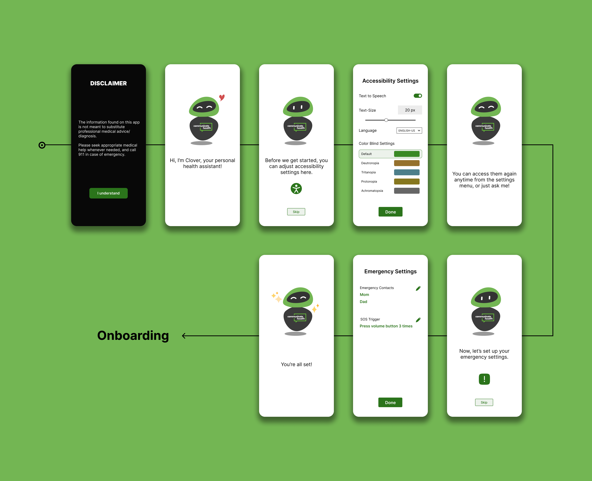

Clover: The Health Assistant
Objective
To design a solution that improves health literacy for the general public, using artificial intelligence, in 24 hours.
To learn more about health literacy, click here.
Project Details
Duration: 1 day (31 March 2023)
Role: UX Designer, UX Researcher, Illustrator
Team Members: 2
Challenges
• Overcoming the technological barriers of a general user.
• Simplifying the multiple aspects of the American healthcare system into a centralized solution.
Solution
• A mobile application that has a voice and text-based AI assistant for health inquiries.
• Includes multiple supplementary features such as SOS alert, medicine tracking, document storage and information retrieval.
Benefit
• Centralizes all personal health information.
• Simplifies healthcare for the general public, especially for people new to the American healthcare system.
Overview
This project was a design challenge hosted by the University of Maryland's UXTerps organization.
The challenge was set by the sponsors, CommunicateHealth, Inc. My submission won 1st place!
Click the following to jump to any stage of the process.
Ideation
Early Research and Sketching
Literature Review
I researched academic papers and journals to familiarize myself more with health literacy and AI, and study their current drawbacks.
Draft Sketches
Based on an initial understanding from the literature review and resources given to us, I sketched mental models of the features I would like to have in a healthcare-based AI app.
Research
Understanding user needs and generating solutions
User Interviews
Our team interviewed 7 people of varying age groups, literacy(health and general), and technological competancy.
We structured our interviews around four areas.
1. Introduction and overview
2. General Health Literacy questions
3. Challenges faced related to health information
4. Suggestion for changes that will improve their experience
Affinity Diagram
Analyzing Data
After creating the affinity diagram from the interview data, we observed common patterns and trends. From these, we generated feasible solutions, in line with our challenge to improve health literacy for the user.
Our goal was to keep things simple, and give users the information they need easily.
Mid-Fidelity Prototype
Creating a base structure for the prototype with features from Ideation
Design Process
Branding and Color Schemes
Accessibility Considerations
I created color schemes for the app using the Communicate Health brand colors. I tweaked these to improve visuals, along with ensuring enough contrast according to WCAG 2.0 guidelines.
I also created alternate color palettes for colorblind options.
Branding
To build trust in the user for the AI along with establishing the brand, I created "Clover" the health assistant, the face of the AI. I drew him using Adobe Illustrator, with the Communicate Health branding.
Taking inspiration from comfort robots from pop culture like Beymax or EVE, I tried making him look as cute and comforting as possible!

High-Fidelity Wireframes
Converting the prototype to final design and creating flows

Final Deliverable
High-Fidelity Prototype for a health assistant app, solving general health queries and guiding you to the appropriate resources for advanced ones.
See Prototype in Figma

Reflections
• Watching accessibility features become a big factor in our win helped me understand its value even better.
• Observing the work done in 24 hours helped me realize the potential of focused sessions for any kind of work.
• Comparing this to big team environments or working alone, I realized I work the fastest with a few teammates having high synergy with me.
To see more detailed insights, view
Project Report
What's Next?
• CommunicateHealth can use the prototype to guide their design decisions for their upcoming AI-related products and projects.
• They can use the research data used in the project to gain better insights into health literacy and improve their existing projects and services.
• With the rapid rise of AI-based products, the features from the prototype can also help future apps in simplifying healthcare.
Analyzing Data
After creating the affinity diagram from the interview data, we observed common patterns and trends. From these, we generated feasible solutions, in line with our challenge to improve health literacy for the user.
Our goal was to keep things simple, and give users the information they need easily.
Accessibility Considerations
I created color schemes for the app using the Communicate Health brand colors. I tweaked these to improve visuals, along with ensuring enough contrast according to WCAG 2.0 guidelines.
I also created alternate color palettes for colorblind options.
Branding
To build trust in the user for the AI along with establishing the brand, I created "Clover" the health assistant, the face of the AI. I drew him using Adobe Illustrator, with the Communicate Health branding.
Taking inspiration from comfort robots from pop culture like Beymax or EVE, I tried making him look as cute and comforting as possible!
High-Fidelity Prototype for a health assistant app, solving general health queries and guiding you to the appropriate resources for advanced ones.
See Prototype in Figma
Reflections
• Watching accessibility features become a big factor in our win helped me understand its value even better.
• Observing the work done in 24 hours helped me realize the potential of focused sessions for any kind of work.
• Comparing this to big team environments or working alone, I realized I work the fastest with a few teammates having high synergy with me.
To see more detailed insights, view Project Report
What's Next?
• CommunicateHealth can use the prototype to guide their design decisions for their upcoming AI-related products and projects.
• They can use the research data used in the project to gain better insights into health literacy and improve their existing projects and services.
• With the rapid rise of AI-based products, the features from the prototype can also help future apps in simplifying healthcare.